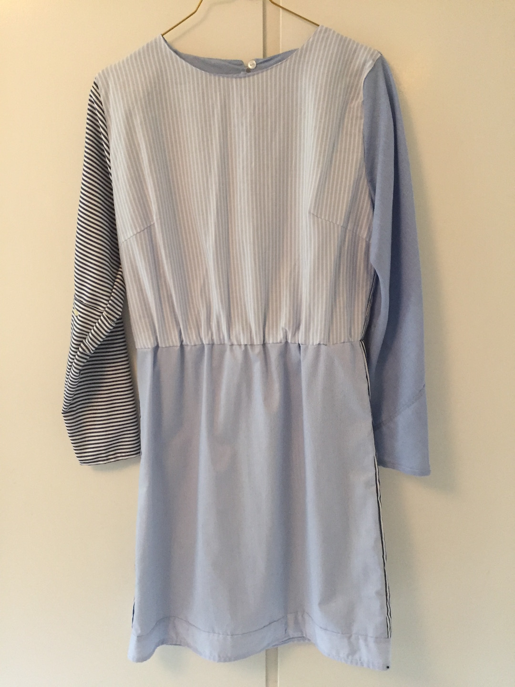

"Man finder ikke guldet
"Man finder ikke guldet
... i den første butik"
På besøg hos den unge Rakel, er genbrugen en vigtig og tydelig del af indretningen. Det at handle i genbrugsbutikker og finde finurlige ting til hjemmet eller klædeskabet er, som hun siger ”…lidt en leg…” . Det er en stor interesse og hobby, som hun har med hjemmefra og altid har delt med sin mor.

5 gode råd
![Get the look
https://norliving.dk/shop/barvogn-anne-med-1166p.html?gclid=Cj0KCQjw3ebdBRC1ARIsAD8U0V7LSo5TWxBrFYarw-TLN7JRS8-TPUKke8tIPvn6T826naQJqWJtofgaApH9EALw_wcB
https://www.royalcopenhagen.com/dk/da/Series/blomst/Dyb-tallerken---Rose-24-cm/p/1025322
https://hay.dk/da-dk/hay/accessories-brand/kitchen-market-brand/french-coffee-cup-with-saucer-blue
https://ilva.dk/stuen/sofaer-og-laenestole/laenestole/span/fenice-317-black-stof/p-1037767-5640163447/
https://ilva.dk/kontoret/kontormoebler/skriveborde/secret/top-i-lakeret-valnoed-finer/p-1034915-5638808081/
https://ilva.dk/opbevaring/kommoder-og-skabe/kommoder/maly/korpus-i-olieret-egefiner/p-1044055-5640350860/](images/Ny%20get%20the%20look.png)